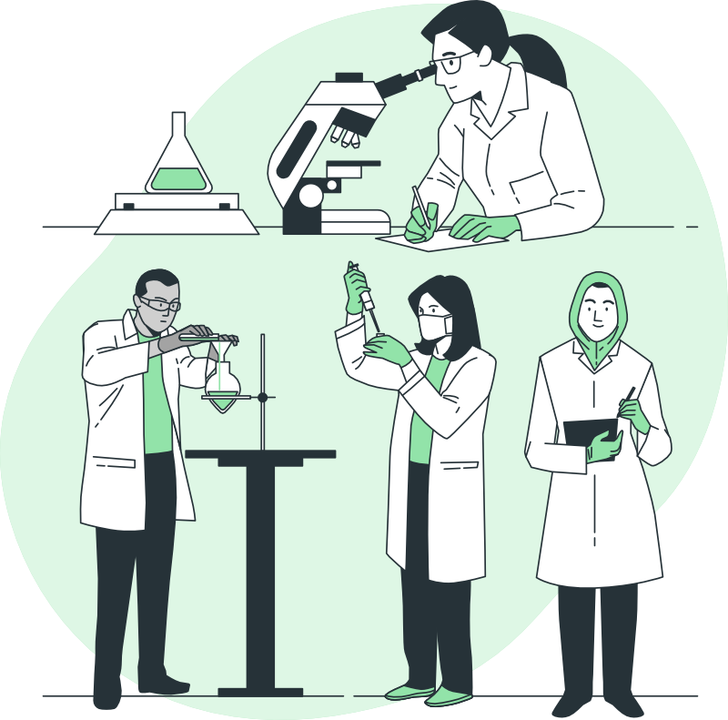

SELAMAT DATANG DI WEBSITE
UKM PENDIDIKAN
RISET DAN TEKNOLOGI
UKM PENRISTEK adalah Unit Kegiatan Mahasiswa dari UPBJJ Bogor, Kami bergerak untuk mengakselerasi Mahasiswa UT Bogor di bidang akademis maupun non akademis.
Daftar sebagai angggotaSosial media kami -->

